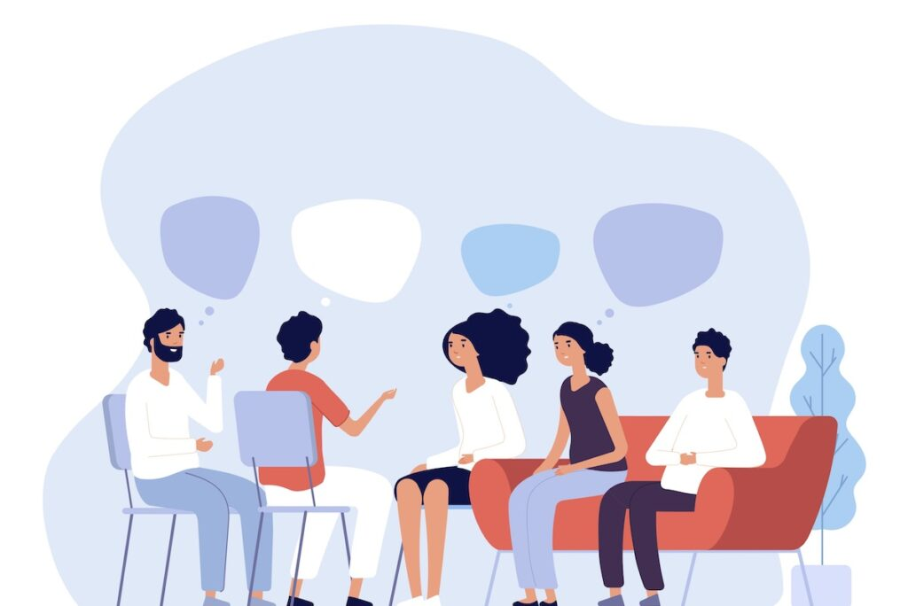
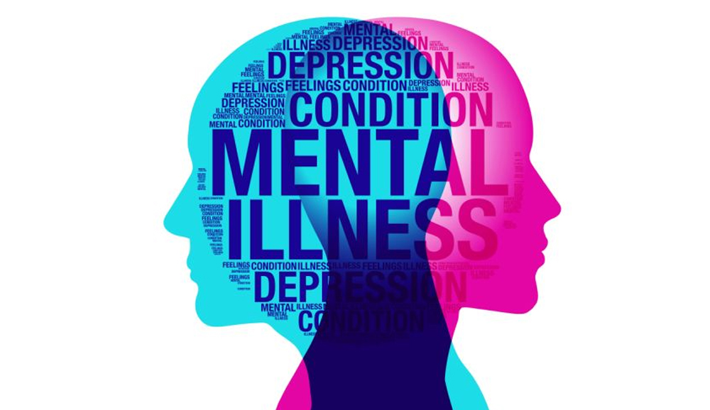

About this Website
Mindful Youth is a dedicated online platform focused on mental well‐being for teenagers. Here, you’ll find a range of blogs, videos, and interactive resources based upon information collected from several authentic sources inclusive of professionally guided websites, references and articles. Our aim is to provide clear, evidence-based information and relatable insights that empower young people to better understand and manage their mental health.
Reason behind Building this Website
The website was built in response to the growing mental health challenges among teenagers—exacerbated by the isolation during the COVID-19 pandemic, academic pressures, and increasing cyberbullying. Recognizing that young minds are particularly vulnerable, our platform seeks to bridge the gap by providing a safe, inclusive space where teenagers can access support, share experiences, and gain awareness about their mental health.

About the Topic
Research indicates that nearly one in three teenagers experience anxiety at some point in their lives, with studies highlighting issues such as academic burnout, social isolation, and cyberbullying as key contributors. By presenting these facts alongside expert insights and real-life stories, we aim to foster a better understanding of the prevalence and impact of mental health issues on young individuals.
Goal behind Building this Website
Our goal is to create an empathetic, supportive community where teenagers can feel heard and understood. We are committed to spreading awareness, providing reliable resources, and encouraging dialogue about mental well-being. Ultimately, Mindful Youth is here to empower young people to navigate life’s challenges with resilience and confidence.
